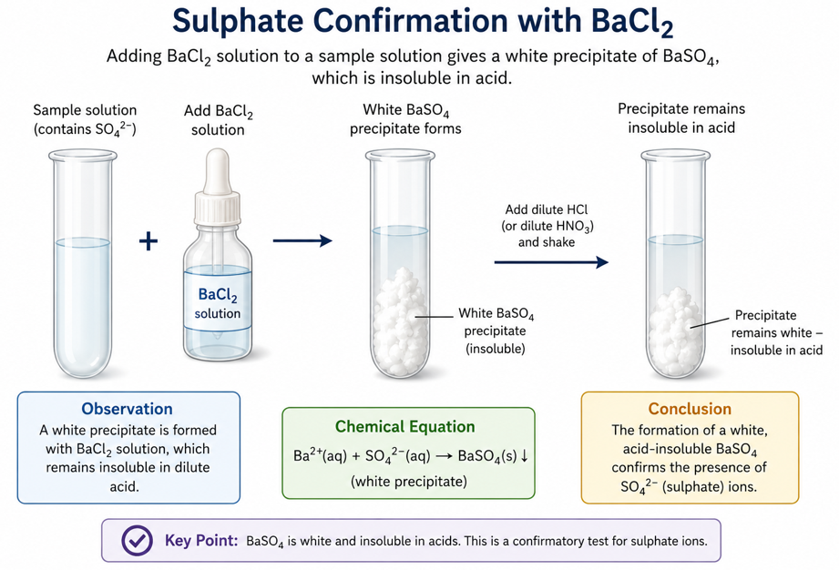

Specimens
A is dilute \(H_2SO_4\). B is \(0.100\,mol\,dm^{-3}\) \(NaOH\). C is \(ZnSO_4\) mixed with sand.
Question 1 - Quantitative Analysis
Put A in the burette. Pipette \(25.0\,cm^3\) of B into a conical flask, add phenolphthalein and titrate until the pink colour just disappears.
\[H_2SO_4(aq)+2NaOH(aq)\rightarrow Na_2SO_4(aq)+2H_2O(l)\]
- Record titre values.
- Find average titre.
- Calculate concentration of A in \(mol\,dm^{-3}\).
- Calculate concentration of A in \(g\,dm^{-3}\).
- Calculate mass of \(H_2SO_4\) in \(250\,cm^3\) of A.
Question 2 - Qualitative Analysis
- Add water to C, shake and filter.
- To filtrate add \(NaOH\) in drops and then excess.
- To another portion add \(NH_3\) in drops and then excess.
- To another portion add \(BaCl_2\), then dilute \(HCl\).
Question 3 - Practical Knowledge
- Why is phenolphthalein used here?
- Why should the pipette not be blown out?
- State the colour change at endpoint.
- Draw the correct titration setup.
Teacher Solution
| Titre | Rough | 1st | 2nd | 3rd |
|---|---|---|---|---|
| Volume A / \(cm^3\) | 12.65 | 12.50 | 12.45 | 12.50 |
\[Average=12.48\,cm^3\]
\[\frac{C_A V_A}{C_B V_B}=\frac{1}{2}\]
\[C_A=\frac{0.100\times25.0}{2\times12.48}=0.100\,mol\,dm^{-3}\]
\[Mass\ concentration=0.100\times98=9.80\,g\,dm^{-3}\]
\[Mass\ in\ 250\,cm^3=9.80\times0.250=2.45\,g\]
Qualitative Report
| Test | Observation | Inference |
|---|---|---|
| C + water, filter | Colourless filtrate; insoluble residue. | Soluble zinc salt and sand. |
| Filtrate + NaOH | White ppt soluble in excess. | \(Zn^{2+}\), \(Pb^{2+}\) or \(Al^{3+}\). |
| Filtrate + NH3 | White ppt soluble in excess. | \(Zn^{2+}\) confirmed. |
| Filtrate + BaCl2 + HCl | White ppt insoluble in acid. | \(SO_4^{2-}\) present. |

Endpoint
Pink to colourless when acid neutralizes the alkali.

Sulphate
Barium chloride gives white barium sulphate.